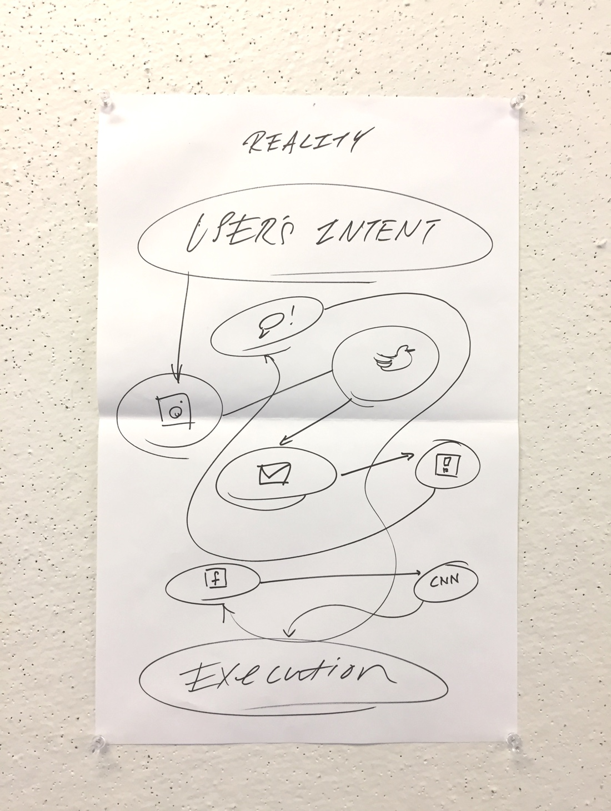
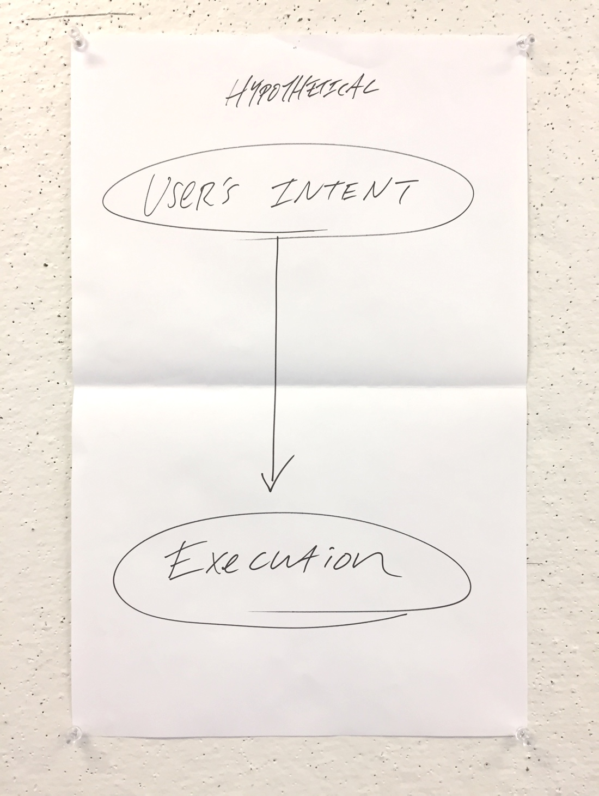

This product design case study rethinks traditional smartphone functionality, and aims to explore new pathways that aim to
solve the current model’s inefficiencies and distractions.
Faculty Advisor:
Dylan Greif
Product Design / Experimental Prototyping
We’ve all been in situations in which tasks we set out to do got lost in the clutter of distractions. Our smartphones love to feed us notifications on a second by second basis.
Scrolling without intention
Mindlessly pulling-to-refresh
Being hooked on “likes”.
The modern smartphone user’s experience look something like this:
When the user’s experience should really be looking like this:
How do we reclaim our attention and productivity?
The Problem
We all want to be productive, but currently our smartphones that we use on a daily basis distract us from doing that.
Not only do these distractions make it harder for us to complete the tasks that we intend to do,
they reinforce a habit of not being deliberate in how we use our phones.
So what if you could bypass all those bells and whistles and use the tools you need without getting lost in the winding roads
of distractions?
What if in
one step a series of intentional actions were completed quickly and seamlessly in specific
contexts?
Hypothesis
If users were able to compound multi-step application interactions with an intuitive gesture, they will be able to regain more control over their smartphones and increase productivity and overall satisfaction.
Existing Solutions
The following are products on the market today that offer a way to avoid the constant distraction of smartphones, and make using them more efficient.
IFTTT
(if this then that) is a web + mobile application that chains together events to help simplify
your life. It runs discreetly in the background of your device.
Flic
Flic is a smart button that triggers a set of actions that can be customized for a variety of
use cases. It’s a physical product that can be put and used anywhere.
Workflow
(Workflow creates recipes for shortcuts and makes a small widget to execute specific functions
on the home-screen. Through one tap of a button, users can set off a series of events.
Siempo
An unsuccessful Kickstarter campaign, Siempo was initially a smartphone with limited features
that boasted its ability to be more “empathetic” in nature. It bars users from downloading social
media applications, and has a very simple interface. Siempo has since pivoted to developing a
mobile application, and is currently in beta for Android and iOS.
The Light Phone
The Light Phone is a credit card sized smartphone accessory that allows you to leave your main
phone behind at home, and use it instead. The only feature of the Light Phone is that it can
make and take calls, so users can be more present in the real world without the distractions
of normal smartphones.
Guiding Principles for Development
After observing the strengths, weaknesses, opportunities, and threats of each solution, I identified five key features that these products currently fail to deliver.
Interface
Most of these solutions have either too simple or too complex interfaces. These solutions are
meant to aid users in helping them be more productive individuals, but their interfaces require
a large investment of time to become accustomed to the product itself.
Machine-Learning
Rather than have users figure out what daily smartphone actions can be compounded in their lives,
why not utilize machine-learning to help them decide? Implementing machine learning could help
track their smartphone usage throughout the day, and continuously make intelligent suggestions
that users could then customize to their liking.
Potential tech:
https://github.com/alexsosn/iOS_ML
Flexibility
All of these solutions are rigid in their execution, as they perform the same functions over
and over but with little to no flexibility. Humans live lives that change everyday, and the option
for personalization for every scenario is necessary for a solution to be effective.
Gestures
Implementation of personalized movements for certain functionality to run can help with habit-forming,
and give users a sense of empowerment. Rather than encourage more smartphone tapping, why not
utilize other methods of input to help users become more deliberate with their smartphones?
Trust
Automation is only effective if users trust the functions to execute as expected. By breaking
frequently and interrupting the natural rhythm of usage, users would simply stop using the solution
altogether.
The objective of this study is to rethink the traditional smartphone experience, and develop a way to access the powerful
capabilities of smartphones without their sticky distractions.
Rather than opening up our smartphones and being tempted to indulge in short-term rewards, I designed
a new pathway that allows users to skip it altogether and access our apps in a more efficient way.
Keyframes
The Control Center on iOS allows users to customize app shortcuts, but what if we could compound actions together to multiply its effectiveness?
1. Control Center
The pre-set automated functions are placed at the bottom of the control panel, accessible to users even if the screen is locked
2. Gesture + Trigger
Displays a list view of all configured actions that are prepared to be run one after the other
3. Progress
Functions are being completed and and progress is tracked, but users have the option of pausing or cancelling the actions in motion
4. Completion
Functions have been completed, and page fades back into the locksreen
Features
The following is a collection of features that highlight important design decisions in my prototype
1. Control Center: Location + Interaction
The interface for this solution was modeled as an extension of the iOS Control Center. The placement also reminds users of
its functionality when using other Control Center applets.
Key design decisions:
Users can access this without unlocking their smartphones with either hand
Deliberate “swipe-up” motion sets the tone for the solution’s functionality
Page control between different functions allows for conservation of space and time
2. Utilizing the Proximity Sensor
I decided to utilize the proximity sensor as a trigger to emphasize its “hands-off” undertones and discourage users from
thoughtless tapping.
In designing with accessibility in mind, I also included fallback functionality of traditional tapping.
3. Tracking Progress until Completion
From my research I’ve found that a large weakness of many of the previously listed solutions is that they run invisible to
the user, and only notify them when the function is complete. While this allows for a sleeker experience,
in the long run it unnecessarily compromises user-trust as they may forget the original formula that they
pre-programmed. This could lead to user-frustration and abandonment of the solution altogether.
Listing the individual applications as they run allows users to visually understand what is happening, and
gives them the option of opting out.
Use-Case Comparison
Let’s look at a comparison of hypothetical automation and our current reality of manually inputting decisions into the apps we want to use.
Manual Inputs
Mobile applications are accessed screen by screen, on a singular, linear path. This allows for other, lower-priority
interactions to side-track us.
The time it takes for us to access all the tools we need in our lives adds up day after day after day.
Hypothetical Automation
Compounding interactions could save us from these micro-distractions, and help reinforce a new paradigm of being
more deliberate with our smart phones.
This automated pathway runs functions instantaniously without leaving the lock-screen, which allows users
to free up bandwith for more important things in life.
The use cases for this sort of functionality are limited to the users themselves. It is only effective if the user has a
clear perspective on what actions they want their smartphones to perform.
If this isn’t the case, the tool would not be useful to the user, and they would perpetually struggle
to get out of the rabbit hole of distractions.
Moving Forward
Attention itself has become a finite resource, and entire economies and industries have emerged
that are centered around harvesting and monetizing it.
Corporations are continuously devising ways of making apps more “user-friendly” to collect more
of it. People are slowly realizing this, and it is really in the company's best interest to start
investing in more productive, and functional systems for their users.
Apps currently capitalize on our habit of casual smartphone usage, and fill them with empty “experiences”
in attempts to bide our time. This creates a vicious cycle of behavior, and can frustrate users.
And if you aren’t deliberate, others will be in shaping the path that you travel.
This study is meant to highlight this issue through proposing a hypothetical solution and researching
methods on how individuals might gain more control and independence.